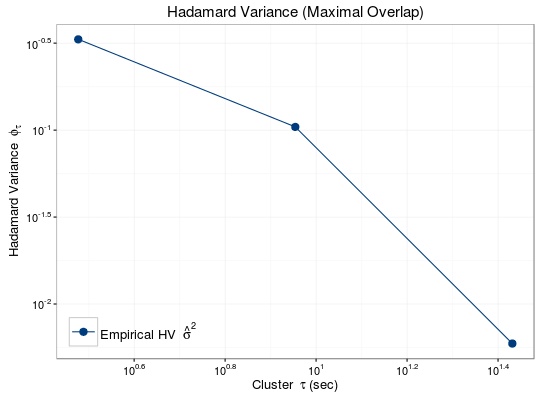

# S3 method for hadam autoplot(object, CI = F, transparence = 0.1, background = "white", bw = F, CI.color = "#003C7D", line.type = NULL, line.color = NULL, point.size = NULL, point.shape = NULL, title = NULL, title.size = 15, axis.label.size = 13, axis.tick.size = 11, axis.x.label = expression("Cluster " ~ tau ~ "(sec)"), axis.y.label = expression("Hadamard Variance " ~ phi[tau]), legend.title = "", legend.label = NULL, legend.key.size = 1, legend.title.size = 13, legend.text.size = 13, ...)
hadam object.boolean that indicates whether the confidence interval should be plotted.double that ranges from 0 to 1 that controls the transparency of the graph.string that determines the graph background. It can be 'grey' or 'white'.boolean that indicates whether the graph should be black and white color scheme.string that indicates the color of the confidence interval (e.g. black, red, #003C7D, etc.)vector of string that indicates the type of lines.vector of string that indicates the color of lines.vector of integer that indicates the size of points on lines.vector of integer that indicates the shape of points on lines.string that indicates the title of the graph.integer that indicates the size of title.integer that indicates the size of label.integer that indicates the size of tick mark.string that indicates the label on x axis.string that indicates the label on y axis.string that indicates the title of legend.vector of string that indicates the labels on legend.double that indicates the size of key (in centermeters) on legend.integer that indicates the size of title on legend.integer that indicates the size of key label on legend.Displays a plot containing the Hadamard variance
It is known that the calculation for confidence interval is incorrect, therefore CI
can only be set to FALSE currently.
